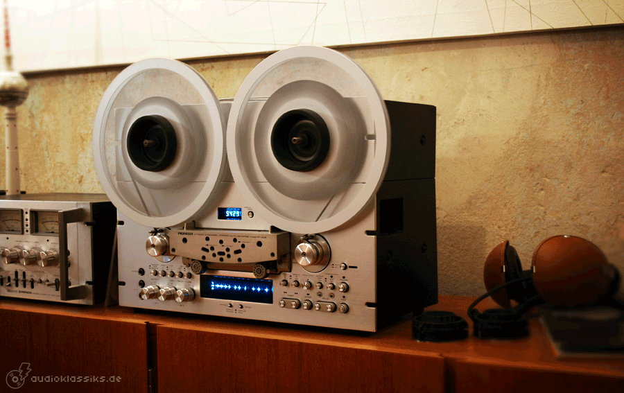
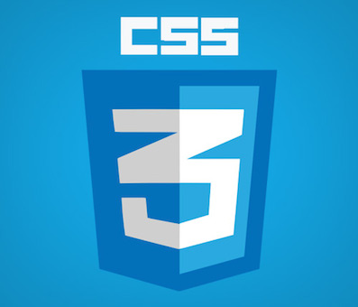
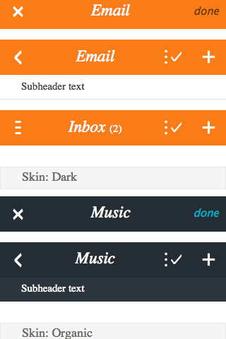

Mobile web: pushing hard for browsers evolution
Mobile web
Pushing hard for browsers evolution
 Francisco Jordano, @mepartoconmigo, barcelonajs, Barcelona, 24/05/2014
Francisco Jordano, @mepartoconmigo, barcelonajs, Barcelona, 24/05/2014
In the begining there was silence and darkness
 AppGeo
AppGeo
Why mobile is so important?
- Mobile devices invaded our lives
- First time on the internet happening on phones
- 2 billion people without computer or smartphone
Life is trying things to see if they work.
Ray Bradbury, american science-fiction writer, 1920

 photo Christian Heilmann
photo Christian Heilmann
What cool things are awaiting for me?
Promises! (but the ones you keep)
Yesler
var p1 = new Promise(function(resolve, reject) {...});
var p2 = new Promise(function(resolve, reject) {...});
p1.resolve('value');
p2.reject('reason');
Promise.all([p1, p2]).then(function(values) { ...});
Promise.race([p1, p2]).then(function(firstResponse) { ...});
Sony Mobile
- Mozilla: Simple Push
- Google: Cloud Messaging
- Apple: Safari Push notifications
Fortunately, there are progress to use the same API, it's being designed today!
W3C working draft


- position: sticky
- wil-change: opacity

WebComponents in FirefoxOS

- From building blocks to web components
- Native support in Firefox OS
- We are already using them
ServiceWorkers bootstraping
navigator.serviceWorker.register("/serviceworker.js").then(
function(serviceWorker) {
console.log("success!");
serviceWorker.postMessage("Hello from installed page");
},
function(why) {
console.error("Installing the worker failed!:", why);
}
);
ServiceWorkers fetching resources
// serviceworker.js
this.addEventListener("fetch", function(e) {
var url = e.request.url;
if (url == '/store.html') {
e.respondWith(new Response({
statusCode: 200,
body: '{ ... }'
});
}
});
ServiceWorkers more awesomeness
navigator.serviceWorker.whenReady().then(function(sw) {
navigator.registerSync('syc contacts', {
description: '',
data: '',
suggestedInterval: 86400 * 1000,
repeating: true,
urgent: false}
}).then(successCb, errorCb);
});
Help shaping the mobile web
Be part of the future and start using the new APIS.
Give your feedback and suggestions and contribute with your personal touch to the new evolution.
Firefox OS comes with all the new goodies, run and start playing wit it!
 Christian Heilmann
Christian Heilmann